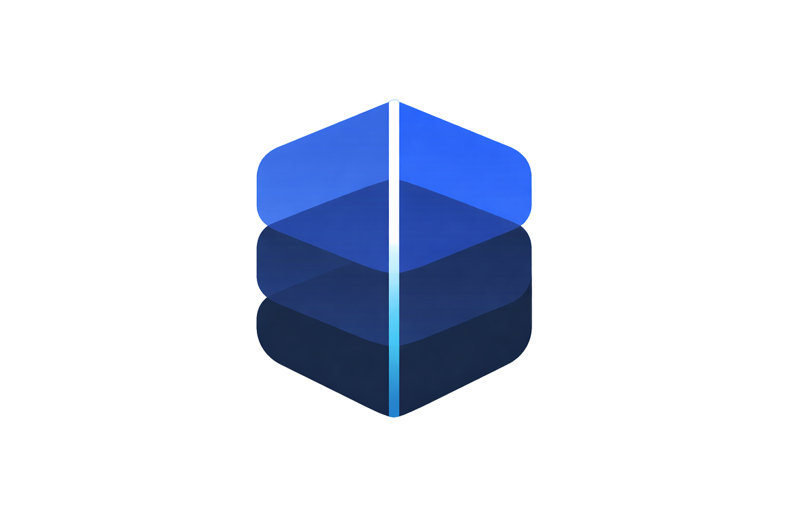

Autonomous SLA Enforcement for Tokenized Real-World Assets
$500B+ in tokenized real-world assets with no automated compliance enforcement
Uptime and SLA compliance checked by humans on spreadsheets. Violations go unnoticed for days.
Providers face zero consequences when they breach SLA terms. No bonded collateral, no automatic penalties.
Breach disputes take weeks to resolve. Legal arbitration is expensive and inaccessible for most tenants.
Breaches are detected after they happen. No proactive monitoring or early warning systems exist.
Providers bond collateral. CRE monitors 24/7. AI predicts breaches. Penalties auto-execute.
Providers lock ETH as a bond when creating SLAs. Breach penalties are automatically slashed from this bond.
Chainlink CRE monitors uptime every 15 minutes. Breaches trigger instant on-chain penalty execution.
3 adversarial AI agents — Risk Analyst, Provider Advocate, Enforcement Judge — deliberate before any slashing. No single-model false positives.
Deep integration across the full CRE feature set
Scans all active SLAs every 15 minutes for uptime compliance
Reacts to ClaimFiled, ProviderReg, ArbitratorReg events
Encrypted KYC checks via TEE enclaves — PII never exposed
AI, Compliance, Uptime API keys threshold-encrypted
World Chain → Sepolia identity relay via CRE forwarder
3 adversarial agents deliberate before any slashing occurs
Data-driven, neutral. Evaluates metrics against SLA thresholds.
Biased to protect. Finds mitigating factors and false positive indicators.
Weighs both arguments. Tiebreaker vote with 1.5x weight.
CRE as an identity relay — not just a token bridge
User verifies via World ID MiniKit.
ZK proof emitted as event.
Picks up ProviderRegRequested.
Runs ConfidHTTP KYC check.
setComplianceStatus() called.
Sybil-resistant identity on any chain.
Novel pattern: World ID proofs don't natively exist on Sepolia. CRE bridges identity proofs cross-chain — enabling Sybil resistance on any EVM chain.
Autonomous SLA enforcement, powered by Chainlink CRE.